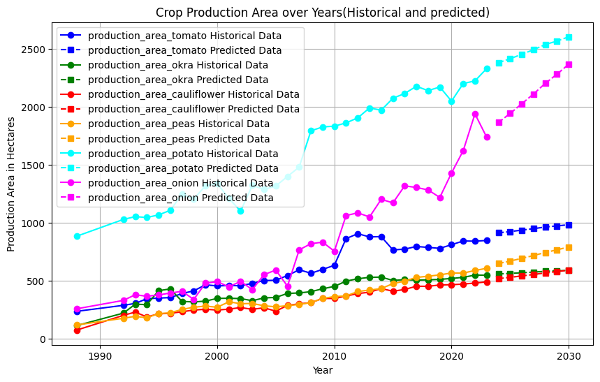
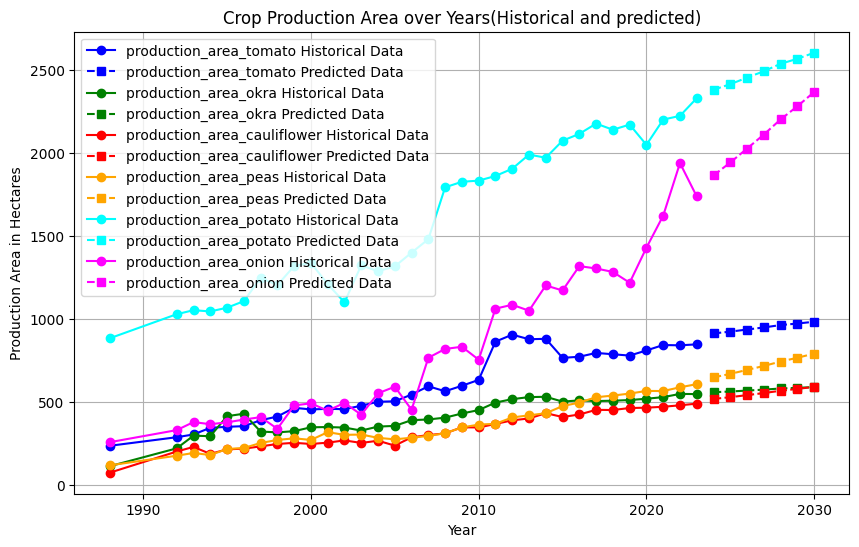

Agri Forecast - Government-Funded Crop Production Prediction
Problem Statement
Agricultural planning and resource allocation require accurate predictions of future crop yields to ensure food security and optimize land use. However, traditional forecasting methods struggle to capture the complex, time-dependent nature of crop growth, influenced by historical data trends, seasonality, and various external factors. This project aims to develop a data-driven solution that leverages machine learning techniques, specifically LSTM models, to accurately forecast crop production based on historical agricultural data. By analyzing trends, seasonality, and patterns in the data, the model provides actionable insights to assist farmers, policymakers, and stakeholders in making informed decisions about crop management and future resource distribution.
Approach
The dataset for this project was sourced from government agriculture databases, containing historical crop production records spanning several years.Data Preparation involved cleaning the data, handling missing values, and generating day-wise data for each crop to enhance model precision. Normalization techniques were applied to ensure consistency, and missing data was carefully imputed to maintain dataset integrity. Analytics included exploratory data analysis (EDA) to identify key trends, patterns, and relationships between crop yields and time. Time-series analysis played a crucial role in understanding seasonal variations and long-term trends. The predictive model was built using an LSTM network, and its performance was improved through hyperparameter tuning to achieve accurate crop production forecasts.Visualization Challenges emerged due to the complexity of comparing multi-crop data, both historical and predicted. Effective visualization strategies were employed to clearly represent trends across crops, enabling in-depth comparisons between past and future predictions using Python's Matplotlib and Seaborn libraries.
Results
The LSTM-based model successfully predicted future crop production across multiple crop types with high accuracy. By analyzing historical data trends and applying time-series forecasting, the model provided crop yield forecasts for the next 10 years, with a particular focus on key crops such as tomato, onion, and potato. The predictions closely aligned with historical growth patterns, demonstrating the model’s ability to capture seasonality and long-term trends in the data. The visualizations effectively compared historical and forecasted production, highlighting the expected yield growth or decline for each crop. Additionally, the model’s performance was evaluated using metrics such as Mean Squared Error (MSE), and the model showed a strong predictive performance with low error rates. These results provide actionable insights for agricultural planning, enabling better decision-making for resource allocation and crop management
Visualizations
 

GitHub Repository
View the project on GitHub: GitHub Repo